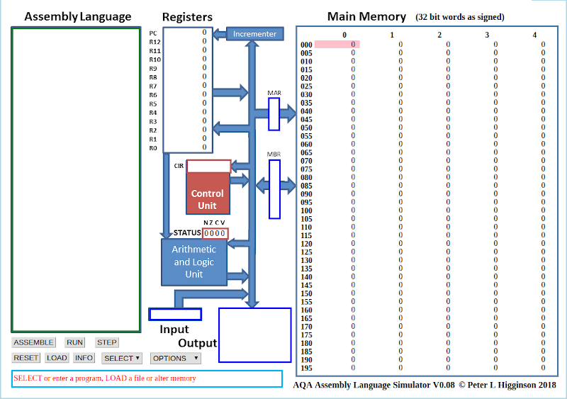
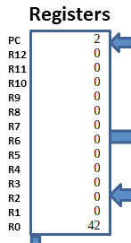

Séquence d'instructions en langage machine⚓︎
Format d'une instruction⚓︎
Un mot extrait depuis la mémoire représente un ordre donné au processeur. Il se présente sous la forme d'une chaine binaire de \(p\) bits (typiquement \(p=32\) ou \(64\) bits), composée de deux parties.
Pour s'affranchir des codes binaires et des calculs d'adresse le programmeur utilise plutôt un langage d'assemblage où les instructions binaires sont remplacés par une chaine de caractères mnémoniques.
En effet, MOV R0,#127 est un peu plus explicite que 11100011 10100000 00000000 01111111 !
Un programme appelé assembleur réalisera ensuite le passage vers le code binaire.
Complément
Les instructions du langage machine peuvent être rangées dans six catégories: calcul, transfert, entrées/sorties, saut, appel de sous programme, instructions particulières (arrêt par exemple).
L'ensemble des codes opération reconnu par un processeur s'appelle son jeu d'instructions.
Il n'est pas question dans cette activité de détailler un quelconque jeu d'instructions, ni les subtilités de son utilisation. Il s'agit plutôt de présenter quelques séquences simples.
Premiers pas avec un langage d'assemblage⚓︎
Dans les exemples qui suivront le jeu d'instructions minimaliste utilisé (voisin de celui des processeurs ARM) peut être trouvé ici.
A faire
Réalisez l'activité ci-dessous et dont la version originale peut être trouvée à cette adresse.
Afin de mettre en pratique ce que nous avons étudié dans le cours 2 "Architecture des ordinateurs - Modèle de von Neumann", nous allons utiliser un simulateur développé par Peter L Higginson. Ce simulateur est basé sur une architecture de von Neumann. Nous allons trouver dans ce simulateur :
-
une RAM
-
un CPU
Une version en ligne de ce simulateur est disponible ici : http://www.peterhigginson.co.uk/AQA/
Voici ce que vous devriez obtenir en vous rendant à l'adresse indiquée ci-dessus :
Simulateur développé par Peter L Higginson

Il est relativement facile de distinguer les différentes parties du simulateur :
-
à droite, on trouve la mémoire vive ("main memory") au centre, on trouve le microprocesseur
-
à gauche on trouve la zone d'édition ("Assembly Language"), c'est dans cette zone que nous allons saisir nos programmes en assembleur
Revenons sur les parties RAM et CPU
La RAM⚓︎
Par défaut le contenu des différentes cellules de la mémoire est en base 10 (entier signé), mais d'autres options sont possibles : base 10 (entier non-signé, "unsigned"), base 16 ("hex"), base 2 ("binary"). On accède à ces options à l'aide du bouton "OPTIONS" situé en bas dans la partie gauche du simulateur.
activité 9.1⚓︎
A faire
À l'aide du bouton "OPTIONS", passez à un affichage en binaire.
Comme vous pouvez le constater, chaque cellule de la mémoire comporte 32 bits (nous avons vu que classiquement une cellule de RAM comporte 8 bits). Chaque cellule de la mémoire possède une adresse (de 000 à 199), ces adresses sont codées en base 10.
A faire
Vous pouvez repasser à un affichage en base 10 (bouton "OPTION"->"signed")
Le CPU⚓︎
Dans la partie centrale du simulateur, nous allons trouver en allant du haut vers le bas :
- le bloc "registre" ("Registers") : nous avons 13 registres (R0 à R12) + 1 registre (PC) qui contient l'adresse mémoire de l'instruction en court d'exécution;
- le bloc "unité de commande" ("Control Unit") qui contient l'instruction machine en cours d'exécution (au format hexadécimal)
- le bloc "unité arithmétique et logique" ("Arithmetic and Logic Unit")
Nous ne nous intéresserons pas aux autres composants de la partie CPU
Programmer en langage d'assemblage.⚓︎
activité 9.2⚓︎
A faire
Dans la partie "éditeur" ("Assembly Language") saisissez les lignes de codes ci-dessous.
1 2 3 | |
A faire
Une fois la saisie terminée, cliquez sur le bouton "submit". Vous devriez voir apparaitre des nombres "étranges" dans les cellules mémoires d'adresses 000, 001 et 002 :

L'assembleur a fait son travail, il a converti les 3 lignes de notre programme en instructions machines, la première instruction machine est stockée à l'adresse mémoire 000 (elle correspond à MOV R0,#42 en assembleur), la deuxième à l'adresse 001 (elle correspond à STR R0,150 en assembleur) et la troisième à l'adresse 002 (elle correspond à HALT en langage d'assemblage).
A faire
Pour avoir une idée des véritables instructions machines, vous devez repasser à un affichage en binaire (bouton "OPTION"->"binary"). Vous devriez obtenir ceci :

Nous pouvons donc maintenant affirmer que :
- l'instruction machine
11100011 10100000 00000000 00101010correspond au code assembleurMOV R0,#42 - l'instruction machine
11100101 10001111 00000010 01001100correspond au code assembleurSTR R0,150 - l'instruction machine
11101111 00000000 00000000 00000000correspond au code assembleurHALT
Au passage, pour l'instruction machine 11100011 10100000 00000000 00101010, vous pouvez remarquer que l'octet le plus à droite, \(00101010_2\), est bien égale à \(42_{10}\)!
A faire
Repassez à un affichage en base 10 afin de faciliter la lecture des données présentes en mémoire.
activité 9.3⚓︎
A faire
Pour exécuter notre programme, il suffit maintenant de cliquer sur le bouton RUN. Vous allez voir le CPU
travailler en direct grâce à de petites animations.
Si cela va trop vite (ou trop doucement), vous pouvez régler la vitesse de simulation à l'aide des
boutons << et >>.
Un appui sur le bouton STOP met en pause la simulation, si vous rappuyez une
deuxième fois sur ce même bouton STOP, la simulation reprend là où elle s'était arrêtée.
Une fois la simulation terminée, vous pouvez constater que la cellule mémoire d'adresse 150, contient bien
le nombre 42 (en base 10). Vous pouvez aussi constater que le registre R0 a bien stocké le nombre 42.


ATTENTION
Pour relancer la simulation, il est nécessaire d'appuyer sur le bouton RESET afin de remettre les
registres R0 à R12 à 0, ainsi que le registre PC (il faut que l'unité de commande pointe de nouveau
sur l'instruction située à l'adresse mémoire 000).
La mémoire n'est pas modifiée par un appui sur le bouton RESET, pour remettre la mémoire à 0, il faut
cliquer sur le bouton OPTIONS et choisir clr memory. Si vous remettez votre mémoire à 0, il faudra
cliquer sur le bouton "ASSEMBLE" avant de pouvoir exécuter de nouveau votre programme.
activité 9.4⚓︎
A faire
Modifiez le programme précédent pour qu'à la fin de l'exécution on trouve le nombre 54 à l'adresse mémoire
50. On utilisera le registre R1 à la place du registre R0. Testez vos modifications en exécutant la
simulation.
Le simulateur prend en charge les labels.
activité 9.5⚓︎
A faire
Saisissez et testez le programme suivant :
1 2 3 4 5 6 7 8 9 10 11 12 13 14 15 16 17 18 | |
activité 9.6⚓︎
Voici un programme Python :
1 2 3 | |
A faire
Écrivez et testez un programme en assembleur équivalent au programme ci-dessus.